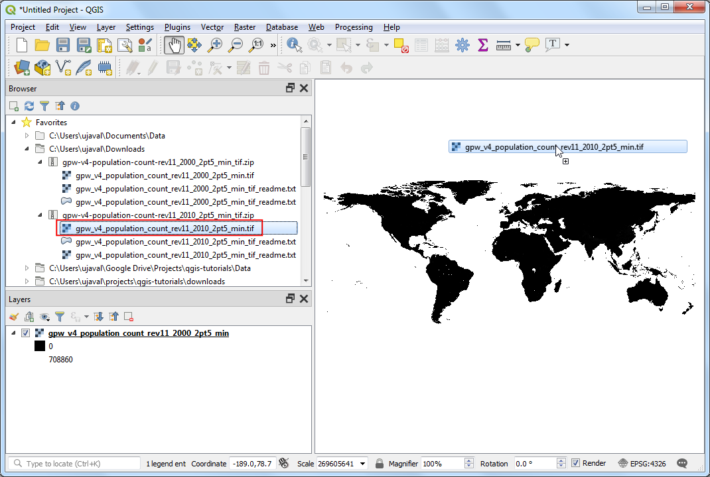

Ujaval Gandhi
Ujaval GandhiTematizzazione ed analisi di RASTER (QGIS3)¶
Frequentemente ricerche e rilevamenti di carattere scientifico esitano nella produzione di set di dati di tipo raster. I dati raster sono essenzialmente griglie di punti a cui vengono assegnati specifici valori. Effettuando operazioni matematiche su tali valori si possono realizzare analisi interessanti. QGIS dispone di una serie di strumenti di analisi residenti, contenuti nel Calcolatore Raster. In questa esercitazione esploreremo gli usi comuni del Calcolatore Raster e le opzioni disponibili qualora si vogliano tematizzare dei dati di tipo raster.
Descrizione del compito¶
Useremo una griglia di dati che descrive la densità della popolazione mondiale per individuare e visualizzare quelle aree del pianeta che, nel periodo compreso tra il 1990 e il 2000, sono state teatro di cambiamenti drammatici nella densità della popolazione.
Altri aspetti che avremo modo di apprendere nel corso dell’esercizio¶
Eseguire copia/incolla delle tematizzazioni tra layer/livelli diversi
Ottenere i dati necessari.¶
Useremo il dataset Gridded Population of the World (GPW) v4 della Columbia University. Specificamente, ci occorre la conta Population Count per tutto il pianeta con risoluzione di 2.5 Gradi Minuti in formato GeoTiFF per l’anno 2000 and 2010. Attenzione che avete bisogno di essere registrati al portale Earth Data account per scaricare il dato.

Per comodità, potete scaricare direttamente una copia del dataset dal seguente link:
gpw-v4-population-count-rev11_2000_2pt5_min_tif.zip
gpw-v4-population-count-rev11_2010_2pt5_min_tif.zip
Fonte Dati [GPW4]
Procedimento¶
Aprire QGIS e usate il pannello Browser per identificare i file scaricati da internet. Espandere il file
gpw-v4-population-count-rev11_2000_2pt5_min_tif.zipe trascinare nella vista di QGIS il file``gpw-v4-population-count-rev11_2000_2pt5_min.tif`` .

Un nuovo livello
gpw-v4-population-count-rev11_2000_2pt5_minsarà aggiunto al pannello Layers. Anche per il filegpw-v4-population-count-rev11_2010_2pt5_min_tif.zipaggiungete il filegpw-v4-population-count-rev11_2010_2pt5_min.tifalla vista.

Vediamo questi livelli. Cliccate il pulsante Identify sul Attributes Toolbar. Quando questo strumento è attivato, cliccate su qualsiasi punto nella vista di QGIS

Il valore associato a quel pixel verrà visualizzato nel pannello Identify Results. Nel pannello Identify Results cambiare il Mode a
Top down. Questa impostazione ci farà vedere i risultati dei pixel di tutti i livelli caricati su QGIS invece di solamente quello in cima. Confronta il valore di tutti e due i livelli. La risoluzione del raster è approsimatamente 5km x 5km, quindi i valori rappresentano un’area del pixel (25 sq. km).

Chiudi il pannello Identify Results . Andiamo a tematizzare i livelli con dei colori. Clicca il pulsante Open the layer Styling panel sul pannello Layers.

Nel pannello Layer Styling clicca il menù a tendina Render type e seleziona
Singleband pseudocolorrenderer.

This renderer will style the layer using a color ramp. The default color ramp is white-red where the minimum value will be assigned the white color and the maximum value in the layer will be assigned the red color. The intermediate values will be assigned a shade of red linear interpolation. Expand the Min / Max Value Settings and choose
Cumulative count cutoption. You will see that the map visualization is much better now. The standard data range is set from 2% to 98% of the data values, meaning that the outliers will not be used to set the minimum and maximum values, resulting in a much more representative visualization.

Chiudi il pannello Layer Styling . Possiamo ripetere tutti i passaggi per il secondo raster, ma c’è un modo più veloce di copiare una tematizzazione già presente. Tasto destro sul livello
gpw-v4-population-count-rev11_2010_2pt5_mine selezionate .

Ora passate con il tasto destro sul livello ancora non tematizzato,
gpw-v4-population-count-rev11_2000_2pt5_mine selezionate .

Gli stessi parametri verranno assegnati a questo livello. Questa opzione è molto utile in particolare quando volete confrontare dei raster diversi usando le stesse identiche categorie. Infatti se visualizziamo e nascondiamo il livello superiore, vediamo le differenze di popolazione nei due anni.

Our task is to create a thematic map of the changes in population. Let’s compute the difference between the 2 layers and create another raster where each pixel represents the change in the population. Go to .

Look for Raster Calculator under Raster Analysis and double-click to open the tool.

Select both the layers using … button as Input Layers. The raster calculator can apply mathematical operations on the raster pixels. In this case we want to enter a simple formula to subtract the 2010 population from 2000. Enter the following expression using ε button. In the expression, The bands are named after the raster name followed by
@and band number. Since each of our rasters have only 1 band, you will see the names with@1appended to the layer name. Keep all the other options as default and save the output layer with the namepopulation_change_2010_2000.tifand click Run.
"gpw_v4_population_count_rev11_2010_2pt5_min.tif@1" - "gpw_v4_population_count_rev11_2000_2pt5_min.tif@1"
Una volta completato il calcolo verrà aggiunto un nuovo libello
population_change_2010_2000al pannello Layers . Cambiamo tematizzazione in modo che gli aumenti e diminuzioni di popolazione siano più definiti. Clicca il pulsante Open the layer Styling panel nel pannello Layers panel.

One option is to use the similar styling technique as earlier and choose a diverging color ramp. Click the Color ramp drop-down and select
Spectralramp. Click the drop-down again and chooseInvert Color Rampto assign blues to low values and reds to high values.

Questa è una buona tematizzazione ma possiamo crearne una più facilmente interpretabile con 4 categorie,
Diminuzione,Neutorale,CrescitaandForte crescita. Vai alla sezione con le classi ed i colori e seleziona tutte le righe. Tieni premuto il tasto Shift per selezionare tutte le righe. Clicca il pulsante Remove selected row(s).

Modifica la modalità Interpolation in
Discrete. Andremo a creare una mappa manualmente. Clicca il pulsante Add values manually . Inserisci-100come Value eDiminuzione(Decline) come Label. A questa categoria diamo il colore blu. La mappatura della scala dei colori funziona in modo da dare a tutti i valori uguali o minori del valore inserito il colore assegnato. Vedrete che ora la mappa nella vista fa vedere solo i pixel dove c’è stata una diminuzione della popolazione.

Complete the color-map with suitable values. I chose
100,1000and100000as the upper-bounds for theNeutral,GrowthandHigh Growthcategories respectively. Assign colors to each of created categories, for example beige, orange and red.

Una volta soddisfatti, chiudete il pannello Layer Styling.

If you want to give feedback or share your experience with this tutorial, please comment below. (requires GitHub account)